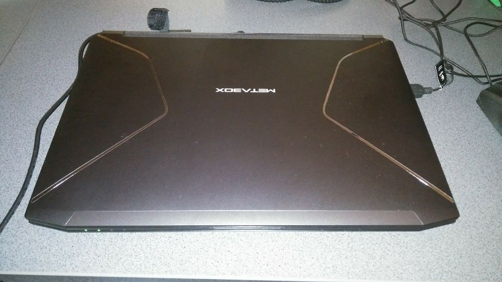
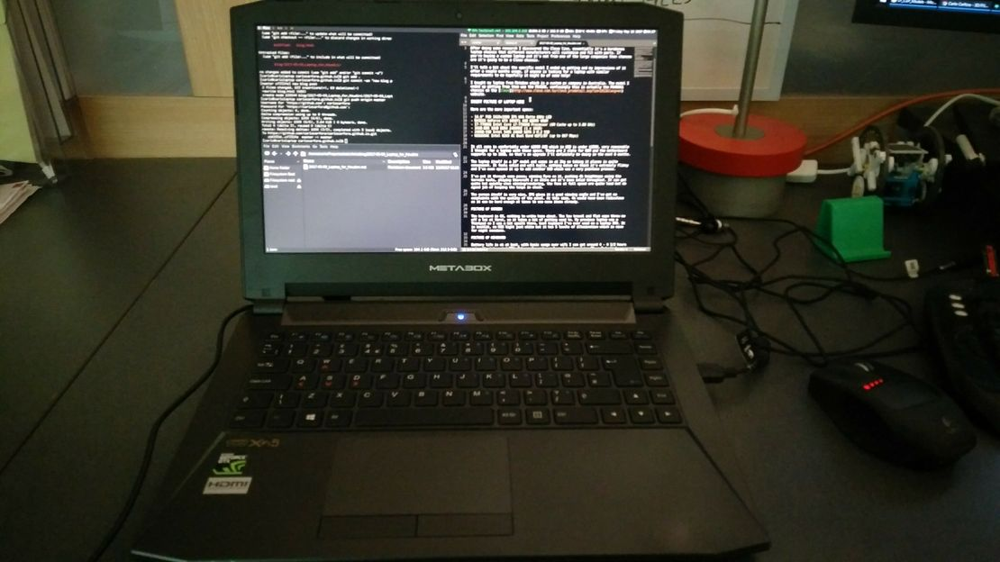
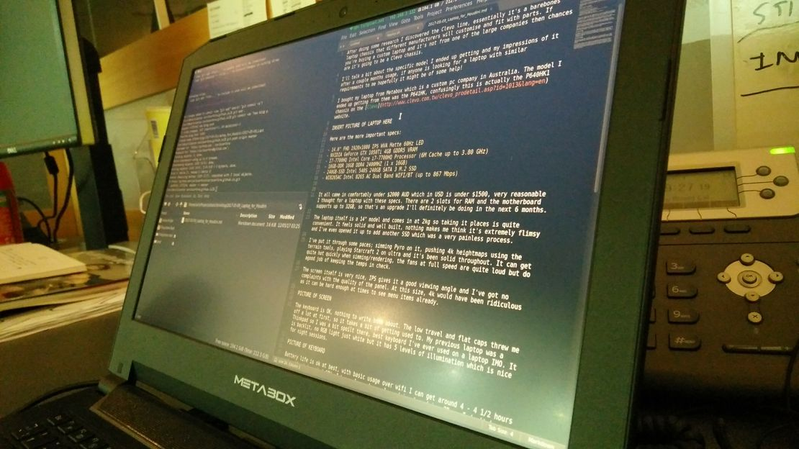
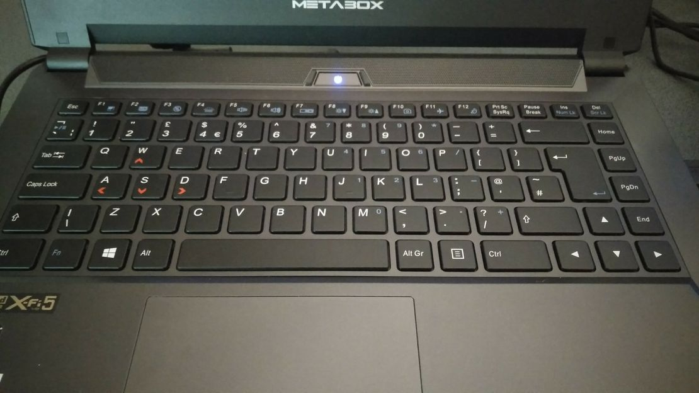

Laptop
Posted on 2017-05-09
A couple of months ago I sold my desktop and needed something to continue doing 3D on. For portability and because over the next year I'll be quite transient, the only real option was a laptop. I needed something that wasn't too bulky/heavy, powerful enough to run sims on and not cost a fortune. Sounds like a laptop that lives somewhere in a dream!
After doing some research I discovered the Clevo line, essentially it's a barebones laptop chassis that different manufacturers will customise and fit with parts. If you're buying a custom laptop and it's not from one of the large companies then chances are it's going to be a Clevo chassis.
I'll talk a bit about the specific model I ended up getting and my impressions of it after a couple months usage, if anyone is looking for a laptop with similar requirements to me hopefully it might be of some help!
I bought my laptop from Metabox which is a custom pc company in Australia. The model I ended up getting from them was the P641HK, confusingly this is actually the P640HK1 chassis on the Clevo website.


Here are the more important specs:
- 14.0" FHD 1920x1080 IPS WVA Matte 60Hz LED
- NVIDIA GeForce GTX 1050Ti 4GB GDDR5 VRAM
- I7-7700HQ Intel Core i7-7700HQ Processor (6M Cache up to 3.80 GHz)
- 16GB-DDR 16GB DDR4 2400MHZ (1 x 16GB)
- 240GB-SSD Intel 540S 240GB SATA 3 M.2 SSD
- WI8265AC Intel 8265 AC Dual Band WIFI/BT (up to 867 Mbps)
It all came in comfortably under $2000 AUD which in USD is under $1500, very reasonable I thought for a laptop with these specs. There are 2 slots for RAM and the motherboard supports up to 32GB, so that's an upgrade I'll definitely be doing in the next 6 months.
The laptop itself is a 14" model and comes in at 2kg so taking it places is quite convenient. It feels solid and well built, nothing makes me think it's extremely flimsy and I've even opened it up to add another SSD which was a very painless process.
I've put it through some paces; simming Pyro on it, pushing 4k heightmaps using the terrain tools, playing Starcraft 2 on ultra and it's been solid throughout. It can get quite hot quickly when simming/rendering, the fans at full speed are quite loud but do agood job of keeping the temps in check.
The screen itself is very nice, IPS gives it a good viewing angle and I've got no complaints with the quality of the panel. At this size, 4k would have been ridiculous as it can be hard enough at times to see menu items already.

The keyboard is OK, nothing to write home about. The low travel and flat caps threw me off a lot at first, so it takes a bit of getting used to. My previous laptop was a Thinkpad so I was a bit spoilt there, best keyboard I've ever used on a laptop IMO. It is backlit, no RGB light just white but it has 5 levels of illumination which is nice for night sessions.

Battery life is ok at best, with basic usage over wifi I can get around 4 - 4 1/2 hours using the integrated GPU. I have always been plugged in when doing 3D so I don't know how long it would last but I would be surprised if it lasted over an hour with the dGPU enabled.
I'll talk about the OS in another post but I'm comfortably running Linux on it and it's working brilliantly after a fair amount of configuration. There is one iportant thing to know about the laptop if you're going to run linux and that is the graphics card is a hybrid/optimus setup. Not a problem for Windows but currently a true pain to confgure under Linux. I got it working after pulling hair out for a week so I plan on writing up a guide to help others.